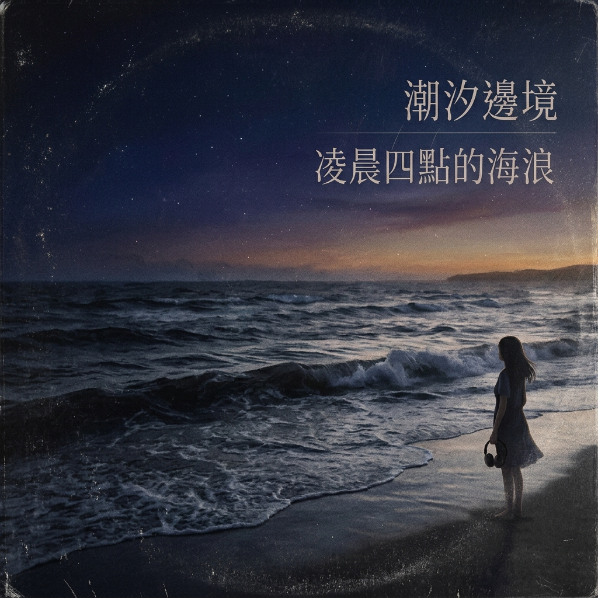

林予安
主唱 · 詞曲

TAIPEI · 25°02′N 121°33′E
OUR FREQUENCY
夜行電台從一間深夜練團室開始。四個人，把公車末班、便利商店的燈和那些說不出口的心事，寫成一首首陪人走回家的歌。

THE PEOPLE BEHIND THE SOUND
認識夜行電台。
主唱 · 詞曲

貝斯 · 和聲

吉他 · 編曲

鼓組 · 節奏
NIGHT RADIO LIVE 2026
四座城市，四個只屬於現場的夜晚。
台北流行音樂中心 · 19:30
高雄流行音樂中心 · 19:30
台中市中山堂 · 19:00
台南文化中心 · 19:00

FIRST LISTEN · SINGLE
一首寫給還醒著的人。戴上耳機，先聽見副歌抵達之前的那片海。
按下播放，聆聽 30 秒歌曲試聽。